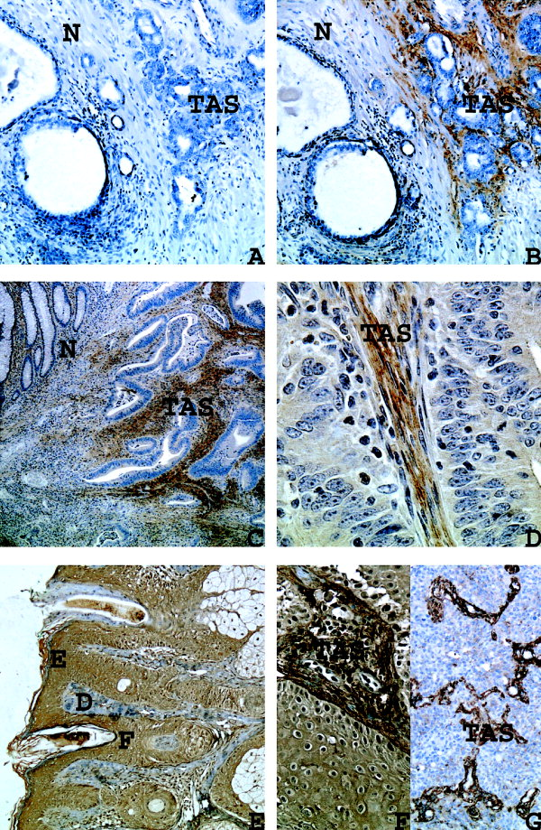
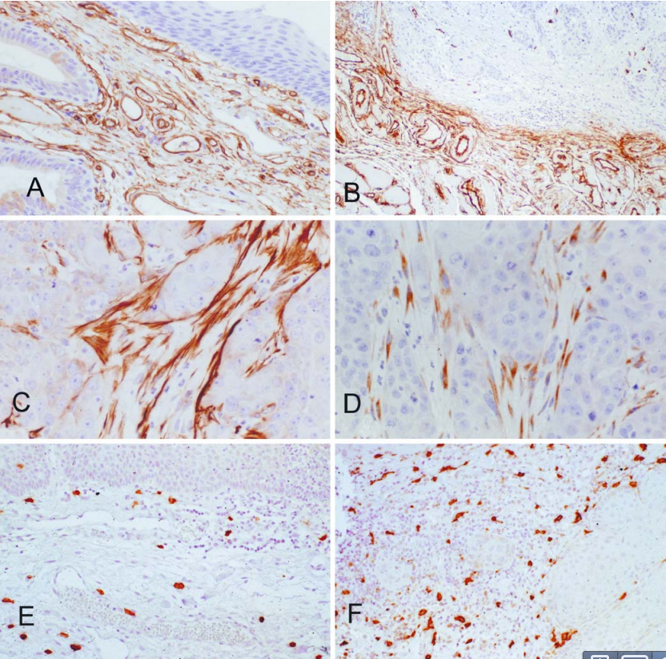
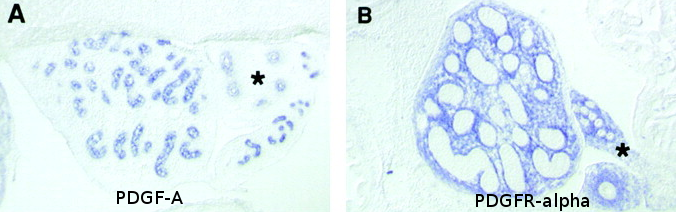
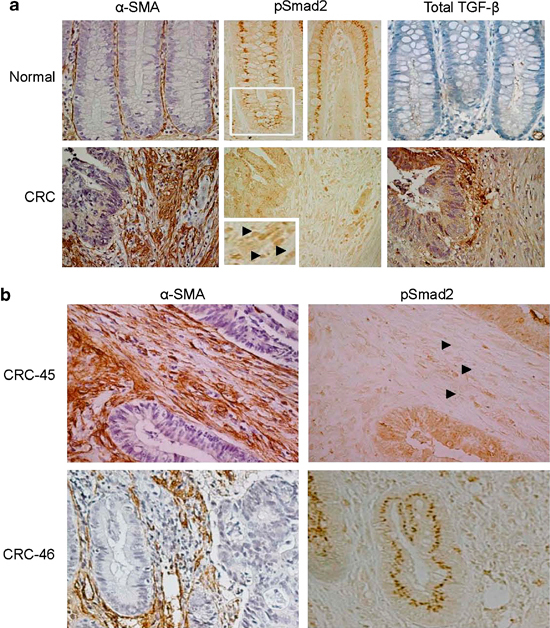
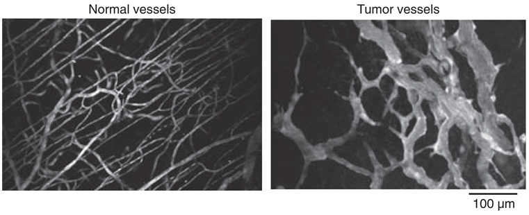

Vähirakkude interaktsioonid strooma rakkudega ja angiogenees
Onkobioloogia
Taavi Päll
vanemteadur, VTAK
Recap
Genoomiterviklikkuse kontroll
Vähi mikrokeskkond: strooma
Vähi mikrokeskkond
Kasvajarakud ei eksisteeri organismis isoleeritult, neid ümbritseb kompleksne keskkond, mis koosneb:
- normaalsetest rakkudest,
- sekreteeritud valkudest,
- füsioloogilistest madalmolekulaarsetest ühenditest (hormoonid),
- veresoontest.
Kasvajad sisaldavad suures mahus strooma rakke


Kasvajad sisaldavad suures mahus strooma rakke
- Kõige sagedasemad vähitüübid nagu rinna, käärsoole, mao ja pankrease kartsinoomid sisaldavad kuni 90% mitte-neoplastilisi rakke.
- Hodgkinsi lümfoomis on üksikud neoplastilised tsütokiine sekreteerivad Reed-Steinbergi rakud ümbritsetud 99% normaalsetest lümfotsüütidest.

Kasvaja mikrokeskonnas resideeruvad rakutüübid
Lisaks neoplastilistele rakkudele leidub vähis erinevas proportsioonis normaalseid rakke:
- T lümfotsüüdid, B lümfotsüüdid, NK ja NKT rakud, makrofaagid (TAM), müeloidset päritolu suppressor-rakud (MDSC), dendriitrakud, neutrofiilid, fibroblastid, müofibroblastid, adipotsüüdid, endoteelirakud, peritsüüdid lümfoid-endoteel.

T lümfotsüüdid
Kasvajasse infiltreeruvad erinevad T-raku populatsioonid
- T rakud lokaliseeruvad
- kasvaja välispiirile,
- lähimasse lümfisõlme
- kasvaja stroomasse - tsütotoksilised T-rakud.
- CD3 positiivsed T-rakud soolevähi maksametastaaside piiril.

Kasvaja makrofaagid

Fibrotsüüdid, nuumrakud, silelihasrakud
- Ülemiste hingamisteede kartsinoomis on erinevat tüüpi rakke:
- CD34+ fibrotsüüdid (inaktiivsed fibroblastid) normaalses (A) ülemiste hingamisteede stroomas ja kartsinoomi (üleval paremal) ümbritsemas (B).
- \(\alpha\)-SMA+ silelihasrakud (C) ja CD117+ nuumrakud (D) vähi stroomas.
- CD117+ nuumrakud normaalses stroomas (E) ja kartsinoomis (F).

Mis põhjustab erinevate normaalsete rakutüüpide olemasolu kasvajas
Kuidas saab moos kommi sisse?
- Vähis olevad normaalsed rakud on jäänukid algsest koest enne tumorigeneesi algust.
- Normaalsete rakkude viibimine kasvajas on tingitud heterotüüpsest signalisatsioonist.
Heterotüüpne ligand-retseptor signalisatsioon
- Erinevate rakutüüpide vahelist signaliseerimist nimetatakse heterotüüpseks signalisatsiooniks.
- Heterotüüpne signalisatsioon soodustab või pidurdab kõrvalolevate teiste rakutüüpide jagunemist ja/või ellujäämist.
- Näiteks: soole epiteelirakud ekspresseerivad c-MET retseptorit aga soole mesenhüüm selle ligandi HGF/SF kasvufaktorit.

Kasvajarakud kontrollivad stroomat
- Heterotüüpne signalisatsioon põhineb
- mitogeensetel kasvufaktoritel (HGF/SF, VEGF, TGF-\(\alpha\), PDGF),
- kasvu inhibeerivatel signaalidel (TGF-\(\beta\)),
- troofilistel faktoritel mis vahendavad eelkõige ellujäämist (insulin-like growth factor-1/2, IGF-1/2).
- Sarnaselt normaalse epiteeliga kontrollivad ka kartsinoomi rakud ümbritsevaid normaalseid kudesid indutseerides neid kasvama.
- Teistpidi, strooma rakud võivad signaliseerida vähirakkudele ka kasvu pidurdavalt.
Heterotüüpsed interaktsioonid mängivad rolli vähi tekkel ja arengus
- Krooniliste põletike korral toimivad strooma rakud nagu makrofaagid, neutrofiilid ja lümfotsüüdid vähi teket soodustava faktorina kuna loovad pro-inflammatoorse keskkonna (sekreteerivad TNF-\(\alpha\) ja prostaglandiine).
- Kartsinoomi rakud sekreteerivad PDGF-i, mille retseptorid on ekspresseeritud strooma rakkudel - fibroblastid, müofibroblastid ja makrofaagid. Strooma rakud sekreteerivad vastusena PDGF-ile IGF-1, mis omakorda soodustab vähirakkude kasvu ja ellujäämist.
- Melanoomid sekreteerivad samuti PDGF-i, mis indutseerib fibroblastidel IGF-2 sekretsiooni.
- Rinnavähi rakud sõltuvad strooma fibroblastide poolt sekreteeritud CXCL12 kemokiinist ja HGF/SF-st.
Vähiraku liinide ksenograftid hiires erinevad reaalsetest kasvajatest

Patient-derived xenograft (PDX) models of colorectal cancer recapitulate primary tumor heterogeneity. Hematoxylin and eosin (H&E) stained FFPE slides of xenografts generated by traditional HT-29 (a) or SW480 (b) colorectal cancer cell lines, vs a primary colorectal tumor, SCRX-PDX-CR101-p0 (c), and the same patient’s PDX tumor following passaging through NOD/SCID mice, SCRX-PDX-CR101-p1 (d). Note the relative uniformity of the HT-29 and SW480 tumors relative to the primary or PDX tumor following minimal passaging in immunocompromised mice.
Kasvaja fibroblastid (CAF)
CAF-id on kõige suurearvulisem vähi strooma rakutüüp tahketes kasvajates

- Normaalselt, koe kahjustuste korral diferentseeruvad fibroblastid müofibroblastideks(=CAF).
- CAF-id võivad olla erinevat päritolu ja diferentseeruda ka
- endoteelist (endothelial-to-mesenchymal transition),
- silelihasrakkudest,
- müoepiteelist või
- mesenhümaalsetest tüvirakkudest.
Kasvaja fibroblastid
Indutseerivad ja soosivad tuumori kasvu, angiogeneesi, põletikku ning metastaase
- Sekreteerivad tervet rida pro-tumorigeenseid kasvufaktoreid, sh. HGF, FGF-e, CXCL12 ja TGF-\(\beta\).
- TGF-\(\beta\) roll: vähirakkudes on kas inaktiveerinud kogu TGF-\(\beta\) rada või on inaktiveeritud p15 geen CDKN2B.
- Kolorektaalvähis on TGF-\(\beta\) ekspressioon nihkunud epiteeli rakkudelt strooma rakkudele ja CAF-idele.
- Epiteelirakud ekspresseerivad märksa vähem p-SMAD2/3 võrreldes strooma rakkudega või pre-maliigses koes olevate epiteelirakkkudega.
TGF-\(\beta\) signalisatsioon muudab fibroblastid CAF-ideks

Vähi veresooned
- Kasvaja angiogeneesi paradigma: tahked kasvajad ei saa areneda üle 1 mm suuruse ilma angiogeneesi initsieerimata
- Mitmed KMK-s esinevad kasvufaktorid ja hüpoksia indutseerivad veresoonte kasvu
- VEGF, bFGF, HGF, PDGF
Vähi veresooned
- Kasvaja veresooned on heterogeense luumeniga, lekkivad ja ebakorrapärased

Vähi versoonte klassifikatsioon
| Soone tüüp | Soone omadused | VEGF-A sõltuvus |
|---|---|---|
| Emasoon, mother vessel (MV) | Suured, õhukeseseinalised, hüperpermeabiilsed, kergelt fenestreeritud peritsüütide vaesed sinusoidid mis on pungil täis erütrotsüüte | + |
| Kapillaarid | Moodustuvad MV-dst sisemise jagunemise teel | − |
| Glomeruloidsed mikrovaskulaarsed proliferatsioonid | Väheorganiseerunud vaskulaarsed struktuurid. Sisaldavad endoteelirakke ja peritsüüte. Minimaalse luumeni ja iseloomulikult rikkaliku mitmekihilise basaalmembraaniga | + |
| Vaskulaarsed väärmoodustised malformations | MV-d mis ebasümmeetriliselt kaetud silelihasrakkudega ja/või fibroosse sidekoega. Sarnased arterio-venoossete väärmoodustistega. | − |
| Toitja-arterid ja äravoolu veenid | Suurenenud, väljaveninud struktuurid, moodustunud olemasolevatest arteritest ja veenidest. Väljuvad vähimassist radiaalselt, toidavad ja dreenivad vähi massis olevaid sooni. | − |
| Vaskulaarne mimikri | Verega täidetud tuumoris olevad avavused mida ümbritsevad vähirakud. | - |
Vähis on vähemalt kuus eri tüüpi sooni


Rakuväline maatriks (ECM)
- vähile on iseloomulik dereguleeritud ECM-i dünaamika MMP-d, plasmin
- protelüütline aktiivsus pärit kasvajas resideeruvatest stroomarakkudest sh. TAM-d, CAF-d
- erinevaid kollageene kasvajates oluliselt rohkem
- kasvajad sellest tingituna füüsiliselt jäigemad
- üle-ekspresseeritud proteoglükaanid, CD44: kasvufaktorite presenteerimine
ECM-i arhitektuur on kasvajates oluliselt erinev normaalsest stroomast
- kollageen-I: normaalselt mitte-orienteeritud fibrillide asemel on kollageen rinnakasvajates selgelt lineaarselt orienteeritud
- kasvaja stroomas kollageeni fiibrid tugevalt krosslingitud: lüsüüloksüdaasid (LOX, LOX-like 2)
- krosslingitud ja tugevam maatriks indutseerib EC migratiooni ja angiogeneesi Bignon et al. (2011)
Veresooned kasvavad piki FN maatriksit